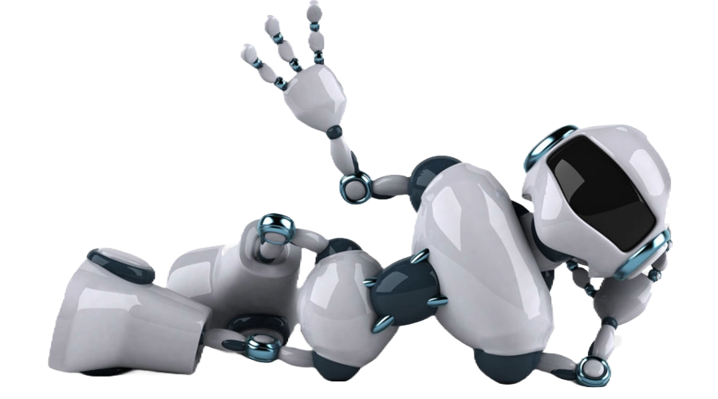

Autor: José Ángel Álvarez Solano

Características:
Automatización: Los robots están diseñados para realizar tareas de manera automática, lo que significa que pueden llevar a cabo acciones sin la intervención constante de un operador humano.
Programabilidad: Los robots pueden ser programados para realizar una amplia gama de tareas y funciones diferentes. Esta programación puede ser manual o basarse en algoritmos de inteligencia artificial.
Sensibilidad al entorno: Muchos robots están equipados con sensores que les permiten percibir su entorno. Estos sensores pueden incluir cámaras, micrófonos, sensores de proximidad, entre otros, que les permiten recopilar información sobre su entorno y tomar decisiones en función de esta información.
Movilidad: Los robots pueden ser móviles o estacionarios. Los robots móviles tienen la capacidad de desplazarse por su entorno, mientras que los robots estacionarios pueden realizar tareas en un lugar fijo.
Flexibilidad: Los robots pueden ser diseñados para llevar a cabo una variedad de tareas diferentes. Su flexibilidad se puede lograr mediante la programación y la reconfiguración de sus componentes.
Precisión: Muchos robots son capaces de llevar a cabo tareas con una precisión extrema, lo que los hace adecuados para aplicaciones en las que se requiere alta precisión, como la manufactura de productos electrónicos o la cirugía asistida por robot.
Capacidad de aprendizaje: Algunos robots pueden aprender y adaptarse a medida que interactúan con su entorno. Esto se logra mediante algoritmos de aprendizaje automático y técnicas de inteligencia artificial.
Aplicaciones diversas: La robótica se utiliza en una amplia variedad de campos, que van desde la manufactura industrial y la exploración espacial hasta la atención médica, la agricultura, la logística y la asistencia en el hogar.
Colaboración: Los robots colaborativos, también conocidos como cobots, están diseñados para trabajar de manera segura junto a humanos, lo que permite la colaboración en tareas compartidas.
Evolución tecnológica: La robótica es un campo en constante evolución con avances tecnológicos continuos. Esto implica mejoras en la eficiencia, la capacidad de procesamiento y la autonomía de los robots.

.png)